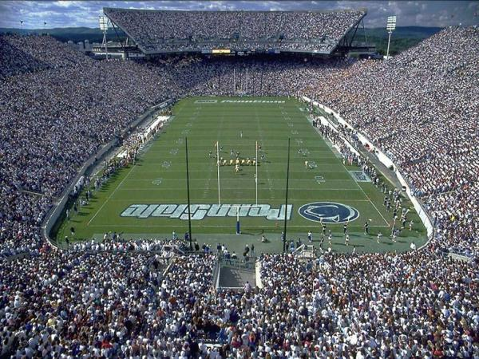
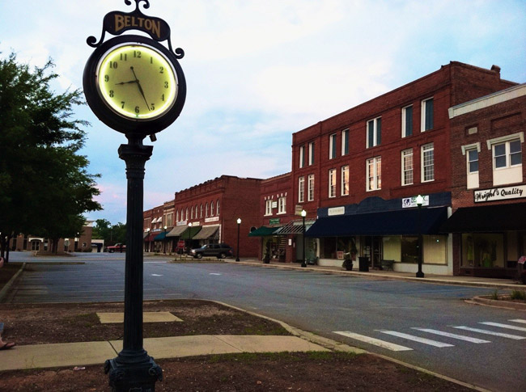

Dayton, OH. This is where I was born. There's not much to remeber I was too young to know much about the city since we moved before I turned 2. Anywho it seems like a nice town, and give me one more reason to be a cavs fan. 
State College, PN. This stop was even shorter than the first. My sister Chloe was born here and apparently my parents were creeped out by the towns devotion to JoePa and the nittany lions.

Anderson, SC. The next stop was one of my favorites, typical small town but I just have fond memories of the town and people. Fun fact the movie Radio took place at the high school I would've attended, Hanna High School.

Belton, SC. Even small town, shorter amount of time. Same fond memories.

St. Louis, MO. Last stop (except for college). Moved here in '98. All of my family is here, I've grown up here ... and the rest is history